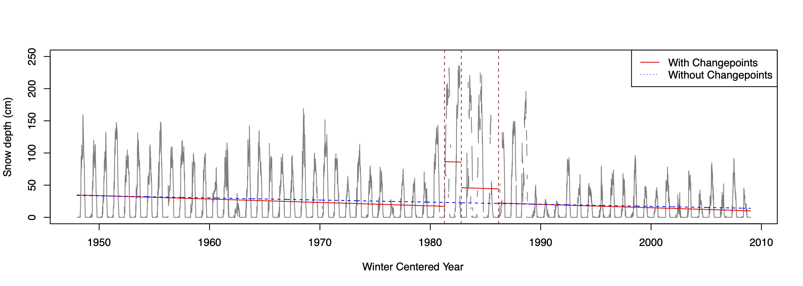
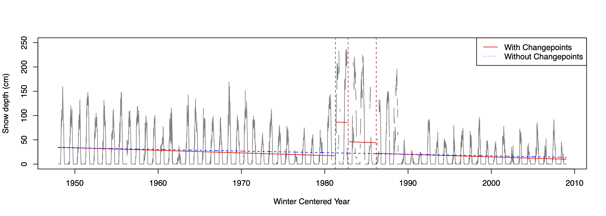
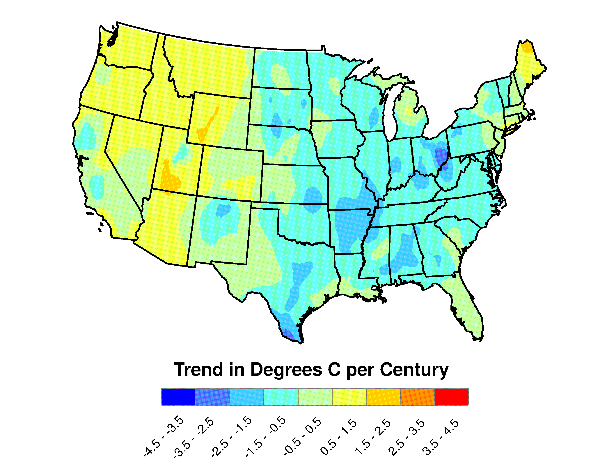
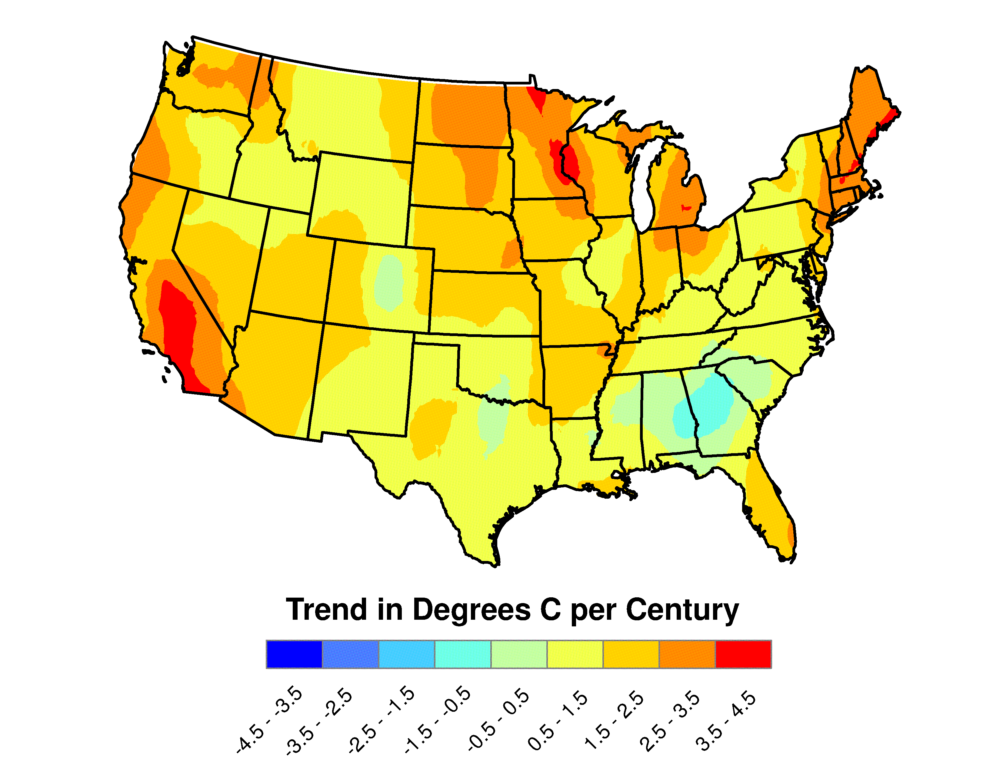

Trend of snow depths
- Trend of daily snow depths in Warm Lake, Idaho (Lee, Lund, Woody, and Xu, Environmet. 2020
 )

)

Long-term trends of US extreme temperatures
- Trends of US monthly maximum temperatures (Lee, Li, and Lund, J. Climate 2014 )

- Trends of US monthly minimum temperatures (Lee, Li, and Lund, J. Climate 2014 )
